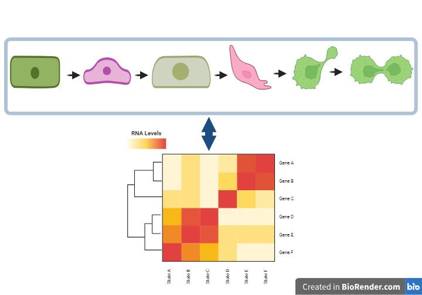
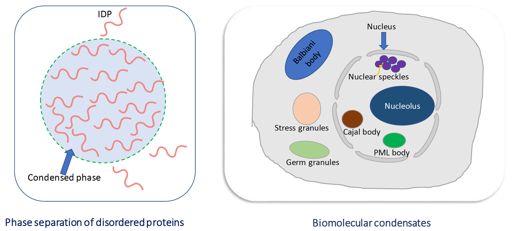
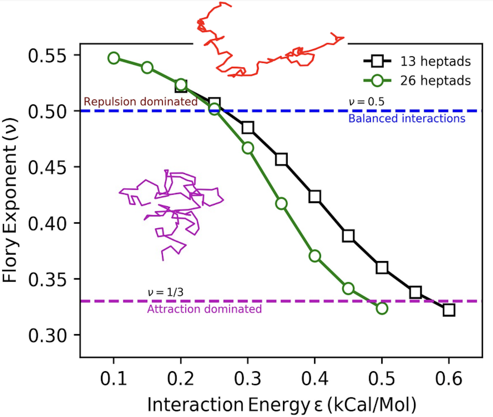
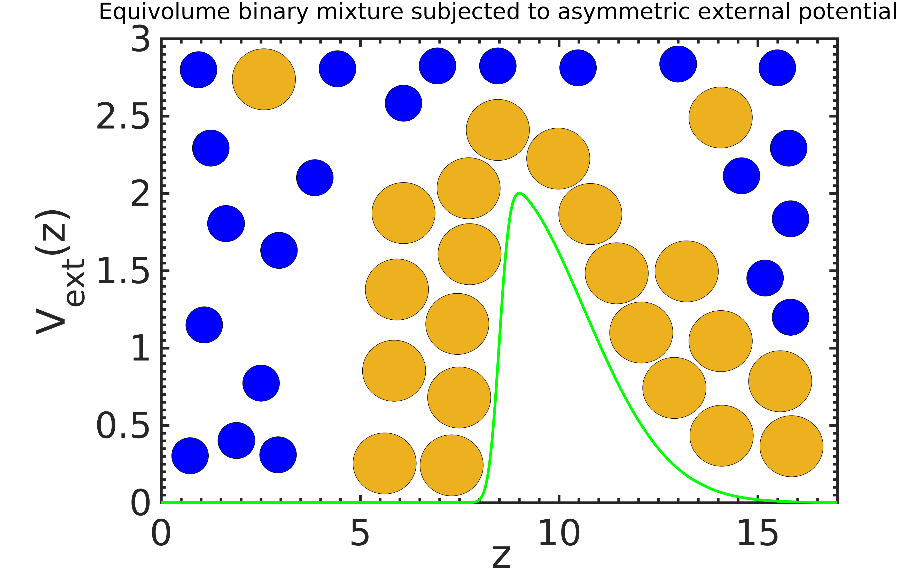
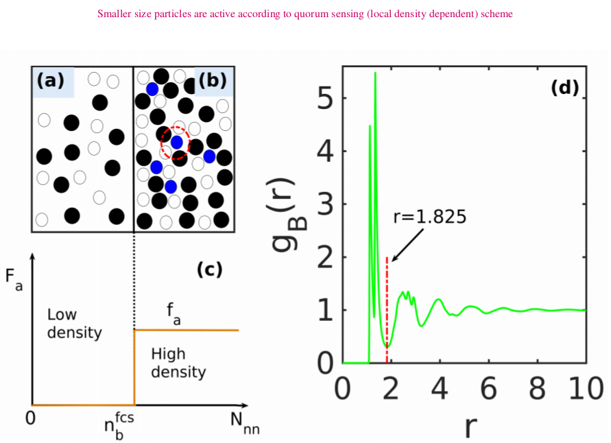
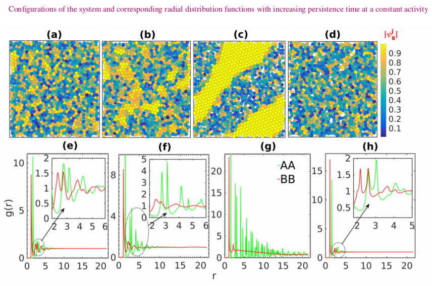
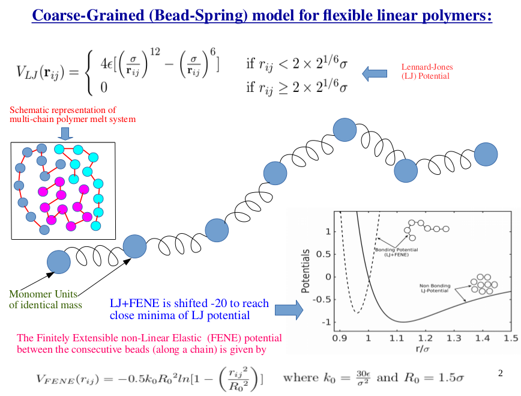
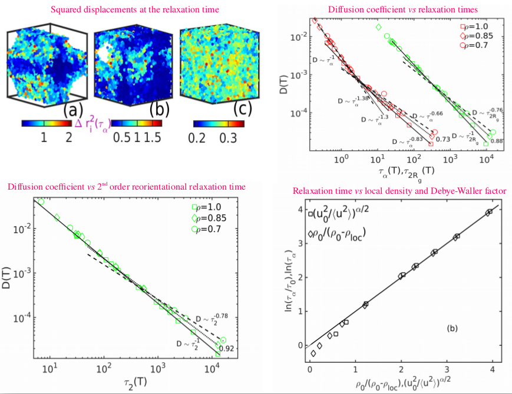

Current work at Inria
At Inria, as part of the DELTA team, I'm developing a deep learning model to predict allosteric communication pathways, communication hotspots, and protein–protein interface hotspot residues. The approach combines molecular dynamics trajectory analysis, graph neural networks, and protein language models, and is validated against experimentally known allosteric sites. The aim is to learn how signals propagate through protein structures from dynamics and sequence together, and to use that understanding to inform the design of peptides, proteins, and RNA.
Work at Department of Pharmacology & Center for AI in Protein Dynamics, Vanderbilt University, Nashville TN, USA.
At Vanderbilt, I worked on protein conformational ensemble predictions using Equivariant Graph Neural Networks and diffusion models. Additionally, I benchmarked recent MD generating methods, including JAMUN, GeoTDM, TITO, TRAJCAST, against classical MD (ground truth). This work helped me understand protein structure and dynamics and what current generative AI methods can provide to learn about protein dynamics.
Cell state transitions

A ``cell state'' can be associated with characteristics like shape, size, morphology, the presence of specific RNA and/or protein molecules, and active or inactive promoter sites. Cells transition between functional or phenotypic states during processes such as embryonic development, tissue regeneration, and cancer cell adaptability. Waddington proposed decades ago that cells move between metastable states much like a marble rolling down a hill with many valleys — a qualitative picture. Understanding these transitions at the molecular level matters for basic biology and for therapies that manage or reverse pathological cellular behavior, particularly in cancer, where malignant cells hijack these pathways to grow and resist treatment.
MCF10A, a non-tumorigenic cell line, is a useful system for studying state transitions under different ligand treatments, comparing control against treatment behavior. We can't yet measure every molecule in a cell at once, but single-cell multi-omics lets us measure the expression of "key" markers that plausibly constitute a functional cell state. We characterized morphodynamic cell states and the transitions between them by building a Markov State Model (MSM) from single-cell trajectories based on cellular features, then used linear algebra to connect those morphodynamic states to gene RNA levels measured by bulk RNA-seq. We predicted per-gene RNA levels in held-out morphodynamic cell states using machine learning — connecting cellular motion to molecules.
Work in the Zuckerman Lab, in collaboration with Experimentalist, Prof. Laura Heiser, Biomedical Engineering, OHSU, Portland OR, USA:
- J. Singh, J. Copperman, L. M. Heiser, D. M. Zuckerman, "Inferring single-cell dynamics of a molecular reporter from unlabeled live-cell light microscopy data analyzed with delay embedding," bioRxiv
- J. Copperman, I. C. McLean, S. M. Gross, J. Singh, V. Murthy, Y. H. Chang, A. E. Davies, D. M. Zuckerman, and L. M. Heiser, "Single-cell morphodynamical trajectories enable prediction of gene expression accompanying cell state change," Cell Systems 17, 101567 (2026)
- Oral & poster presentation, BPS 2024 — "A near-continuum model of morphodynamic single-cell states quantifying gene expression during epithelial–mesenchymal transitions"
Droplets within living cells
Membraneless organelles within cells are often called cellular "condensates" or "droplets" — stress granules, germ granules, the nucleolus, nuclear speckles — which form through liquid–liquid phase separation (LLPS), driven by weak multivalent interactions among proteins, RNAs, and DNA. These condensates form and dissolve dynamically within the cytoplasm and nucleoplasm to perform functions like gene transcription, DNA replication and repair, and protein synthesis. Several diseases, including cancer, Huntington's disease, and ALS, are believed to stem from irreversibility or misregulation of these droplets; their regulation involves post-translational modifications such as residue phosphorylation and RNA-mediated feedback during transcription.
Open questions I'm interested in: why are condensates necessary for various biological functions? What protein/RNA/DNA composition gives rise to specific cellular functions? How do chemical reactions inside and outside droplets affect their size, location, and growth? What role does chromatin play in the formation, regulation, and disease relevance of cellular condensates? Coarse-grained and all-atom MD simulations can help unravel these questions.


This work is supported by the Robert Vácha group at Masaryk University, Brno, Czech Republic.
Transport across a potential barrier
We simulated a binary mixture of colloidal particles subjected to an asymmetric external potential along the z-direction — a model system that may help explain transport across biological cell membranes.

A coarse-grained model of quorum sensing
We developed a model of dense active systems, where activity is introduced through a local density-dependent quorum-sensing scheme. Applying activity to the smaller particles of a binary colloidal mixture drives phase separation into solid-like and liquid-like regions. The stability of the solid-like phase turns out to come from minimal momentum transfer between active and passive particles in the phase-separation regime.


Violation of Stokes–Einstein & Stokes–Einstein–Debye relations in supercooled polymers
During my graduate work, I studied coarse-grained simulations of polymer melts (linear and branched) in the glassy state, analyzed through statistical mechanics. We found that violations of the Stokes–Einstein and Stokes–Einstein–Debye relations in supercooled linear polymers — at the coexistence of dilute-gas and supercooled domains — arise from a disparity in the motion of fast and slow monomers. This may be relevant to aggregation in cellular environments caused by droplet misregulation, as above.
We also proposed a new relation between structural relaxation time and local density (the nearest-neighbor peak of the radial distribution function) in supercooled linear polymer melts and the Kob–Andersen binary mixture, as an alternative to the existing relation between the Debye–Waller factor and relaxation time.


- J. Singh, P. P. Jose, J. Phys.: Condens. Matter 33, 055401 (2021) — arXiv
- AIP Conference Proceedings 2265, 030220 (2020)
- D. C. Thakur, S Kushawah, J. Singh, A. Varughese, P. P. Jose, "Relation between local density and density relaxation near glass transition in a glass forming binary mixture," under review — arXiv